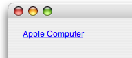

Q: How do I embed a hyperlink inside an NSTextField or NSTextView?A: You can embed a hyperlink using an NSAttributedString. The resultant attributed string will contain the url, style and color for display. Figure 1: An example illustration of an NSTextField with a hyperlink.  Extending NSAttributedStringAn easy way to factor this in your application is to add a "category" to the NSAttributedString class. By adding an additional class method to this category, you allow other classes to benefit from this extended feature. Listing 1: Adding a category to NSAttributedString.
@interface NSAttributedString (Hyperlink)
+(id)hyperlinkFromString:(NSString*)inString withURL:(NSURL*)aURL;
@end
@implementation NSAttributedString (Hyperlink)
+(id)hyperlinkFromString:(NSString*)inString withURL:(NSURL*)aURL
{
NSMutableAttributedString* attrString = [[NSMutableAttributedString alloc] initWithString: inString];
NSRange range = NSMakeRange(0, [attrString length]);
[attrString beginEditing];
[attrString addAttribute:NSLinkAttributeName value:[aURL absoluteString] range:range];
// make the text appear in blue
[attrString addAttribute:NSForegroundColorAttributeName value:[NSColor blueColor] range:range];
// next make the text appear with an underline
[attrString addAttribute:
NSUnderlineStyleAttributeName value:[NSNumber numberWithInt:NSSingleUnderlineStyle] range:range];
[attrString endEditing];
return [attrString autorelease];
}
@end
IMPORTANT: Notice in Listing 1, in an NSTextView (as of Mac OS X 10.3) NSLinkAttributeName is all you need to achieve the look and feel of a hyperlink. The two additional attributes: NSForegroundColorAttributeName and NSUnderlineStyleAttributeName are redundant, but however are necessary for NSTextField. Back to Top  Hyperlink in an NSTextFieldListing 2: Creating a hyperlink attributed string inside an NSTextField.
-(void)setHyperlinkWithTextField:(NSTextField*)inTextField
{
// both are needed, otherwise hyperlink won't accept mousedown
[inTextField setAllowsEditingTextAttributes: YES];
[inTextField setSelectable: YES];
NSURL* url = [NSURL URLWithString:@"http://www.apple.com"];
NSMutableAttributedString* string = [[NSMutableAttributedString alloc] init];
[string appendAttributedString: [NSAttributedString hyperlinkFromString:@"Apple Computer" withURL:url]];
// set the attributed string to the NSTextField
[inTextField setAttributedStringValue: string];
}
As you can see, setHyperlinkWithTextField: can reside in your class, which can be called from your class's -awakeFromNib or NSDocument's -windowControllerDidLoadNib:, for example. Back to Top Hyperlink in an NSTextViewListing 3: Creating a hyperlink attributed string inside an NSTextView.
-(void)setHyperlinkWithTextView:(NSTextView*)inTextView
{
// create the attributed string
NSMutableAttributedString *string = [[NSMutableAttributedString alloc] init];
// create the url and use it for our attributed string
NSURL* url = [NSURL URLWithString: @"http://www.apple.com"];
[string appendAttributedString:[NSAttributedString hyperlinkFromString:@"Apple Computer" withURL:url]];
// apply it to the NSTextView's text storage
[[inTextView textStorage] setAttributedString: string];
}
Note that Listing 3 sets the attributed string a little differently for NSTextView. You must set the text using the NSTextStorage object. NSTextStorage is a subclass of NSAttributedString that is the backing store for an NSTextView object. Back to Top Document Revision History| Date | Notes |
|---|
| 2006-10-02 | First Version |
Posted: 2006-10-02
|